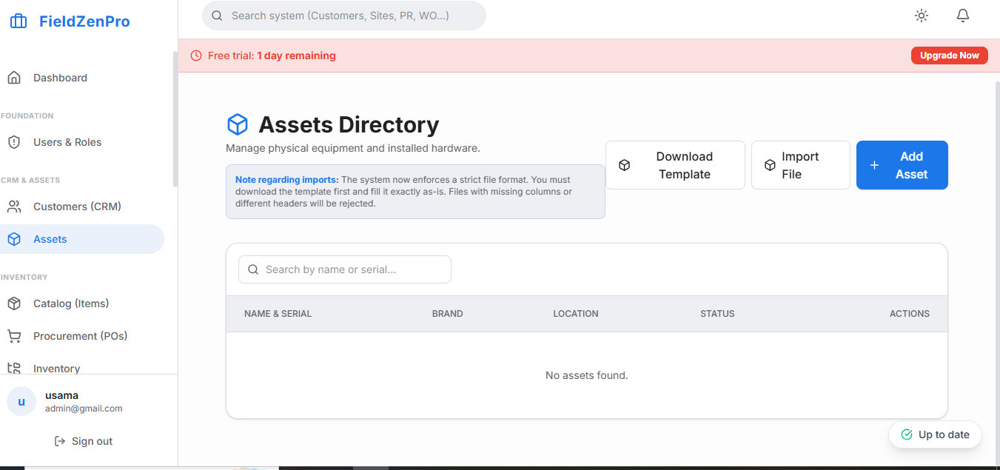

Running an HVAC business is a study in controlled chaos. You operate in one of the most demand-volatile industries in existence, where a perfectly planned week of maintenance appointments can be completely detonated by a three-day heat dome that sends thousands of homeowners into a panic about their failing air conditioning units. On the flip side, a mild autumn means your installation revenue evaporates and you are scrambling to fill the schedule with preventive maintenance calls.
Against this backdrop of extreme seasonality and demand unpredictability, HVAC business owners also manage some of the most expensive technician labor in the trades, highly complex inventory requirements (refrigerants, compressors, variable-speed motors), and a customer base that is increasingly demanding Uber-style service transparency.
Attempting to navigate all of these variables with generic business tools—a basic calendar app, paper work orders, and QuickBooks alone—is a recipe for operational mediocrity. What you need is HVAC business management software built around the specific rhythms and demands of heating, ventilation, and air conditioning work.

Before discussing software solutions, it is worth mapping the HVAC revenue calendar, because this map determines which software features deliver the highest return on investment for your specific business.
Peak Season (Summer & Winter): Emergency repair calls dominate. Speed of dispatch and first-time fix rate are the primary revenue drivers. Every hour of technician downtime is an hour of extraordinary revenue lost.
Shoulder Season (Spring & Fall): Tune-up and maintenance contracts drive revenue. Efficient scheduling of recurring preventive maintenance jobs, and the ability to upsell customers into new equipment during inspections, are the critical capabilities.
Deep Shoulder (Late Fall & Early Spring): Installation projects and system replacements are booked. Project management, detailed job costing, and subcontractor coordination become important.
The ideal HVAC business management software must perform excellently across all three phases.
"The HVAC companies that dominate their markets are not just better at fixing equipment—they are fundamentally better at managing the business side of their operations."
During a summer heat wave, your dispatchers are managing an avalanche of "no cool" emergency calls while trying to maintain the scheduled maintenance appointments already on the books. HVAC business management software provides a live GPS map showing every technician's current location, job status, and estimated time of completion. The dispatcher can instantly calculate which technician can respond to an emergency with minimal disruption to the rest of the day's schedule—and then reroute the entire fleet with a few clicks.
HVAC diagnostic work orders are inherently more complex than those of simpler trades. They must capture equipment make, model, serial number, refrigerant type, refrigerant levels, electrical readings, and safety checks. Great HVAC software provides pre-built work order templates tailored to specific job types—AC tune-up, heat pump installation, furnace repair—ensuring that technicians capture all the legally and operationally required data on every visit.
Annual maintenance agreements (AMAs) are the financial backbone of a stable HVAC business. They smooth out the seasonal revenue volatility and give you a base of recurring cash flow even during mild weather months. HVAC business management software tracks all active agreements, automatically generates the spring and fall tune-up work orders at the right time, and alerts your team when a contract is approaching renewal. The best platforms can even send automated renewal offers via email, with a customer payment link, requiring zero manual intervention from your sales team.
A customer's relationship with their HVAC system spans 15–20 years. Over that time, multiple technicians from your company will service the same equipment. HVAC software maintains a longitudinal equipment record for every unit you have ever serviced: installation date, manufacturer warranty expiration, every service visit, every part replaced, and every refrigerant recharge. This history empowers your technicians to have genuinely informed conversations about equipment longevity and helps them build the trust that converts single-visit customers into lifetime service agreement clients.
Managing refrigerants is not just an operational challenge—it is a federal compliance requirement. EPA Section 608 regulations mandate precise tracking of refrigerant purchases, recovery, and disposal. HVAC business management software with integrated refrigerant tracking creates an automatic, auditable log of every refrigerant transaction tied directly to the specific work order and technician, protecting your business from compliance risk.
The spring AC tune-up season is one of the highest-ROI opportunities in the HVAC business, but only if you execute it efficiently. With 200 or 300 maintenance contracts to fulfill in an eight-week window, scheduling them manually is a logistical nightmare.
Software solves this elegantly. At the start of spring, your HVAC business management system automatically generates 200 work orders, clusters them geographically into efficient daily routes, and assigns them to your technicians. Customers receive automated scheduling emails with self-serve time-slot booking. Your spring season fills itself.
FieldZenPro was built by a team that deeply understands the operational complexity of HVAC businesses. From peak-season emergency dispatch to automated service agreement management, every feature was designed with the HVAC workflow in mind.
Manage every season profitably with purpose-built HVAC business management software.
Start Your 14-Day Free Trial